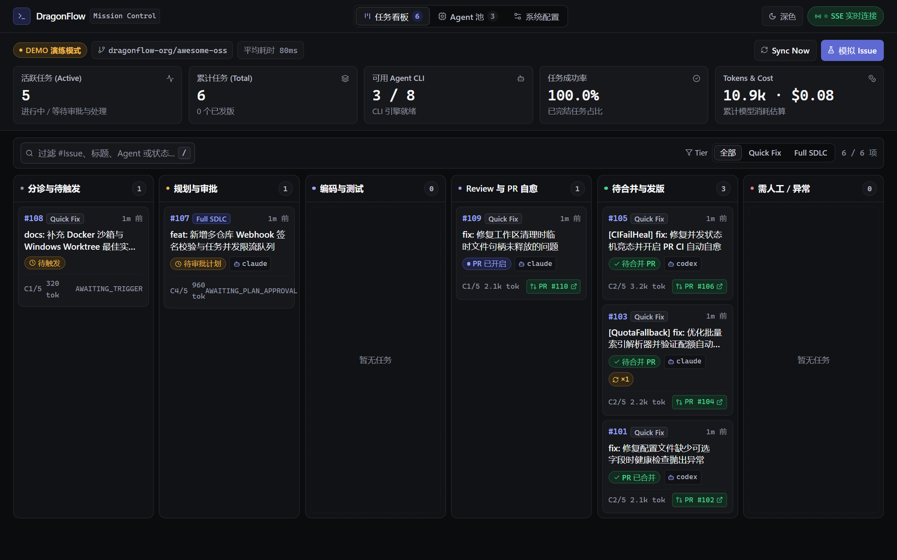

把 GitHub Issue 到发版，
变成一条“管得住”的 AI 流水线
DragonFlow（龙流） 打通 Issue 自动分诊、三层智能路由、Spec/Plan 审批门禁、Git Worktree 隔离编码测试、异构交叉审查、PR 与 CI 自动修复到 Release 发布的端到端闭环。提供 Web 控制台 与 Windows 原生桌面端，小白也能 3 分钟上手跑通全流程。
git clone https://github.com/backbay2-yzg/dragonflow.git
cd dragonflow && pnpm install && pnpm build && pnpm demo
为什么选 DragonFlow？不盲目全自动，关键节点你说了算
不同于“一把梭哈改代码”的脚本，DragonFlow 通过 20 个严谨的状态机与分级审批卡点，让低风险修得快、高风险改得稳。
🛡️ 陌生人门禁防滥用
非维护者提交的 Issue 默认停在待触发状态，只有你回复 /auto 或贴上
auto-dev 标签才启动。
⚖️ 轻重任务自动分流
小 Bug / 文档走 Quick Fix 直接提 PR；复杂功能走
Full SDLC 先出 Spec/Plan 等你批准再动手。
🔄 配额耗尽自动切 CLI
内置 8 种 CLI + YAML 模板扩展。主 Agent 遇限流或欠费自动按降级链切备用 CLI，并记录完整切换审计。
🩺 CI & Review 自动自愈
PR 提交后自动盯梢 GitHub Actions 检查和 Review 评论，变红或被打回时拉取日志自动修复并重新推送。
点击下方 6 个阶段，交互式查看每个环节的状态与卡点：
Stage 1 · Issue 分诊与门禁
控制台全界面实景导览（8 张实机运行截图）
点击标签切换页面视图，点击图片可全屏放大并支持键盘左右翻页。
小白 3 分钟快速体验（无需 GitHub Token，无需任何 API Key）
Demo 模式会在本地自动生成沙箱 Git 仓库并使用内置 Mock 推理，不触碰任何真实仓库，零费用开箱即用。
检查本机基础环境（Node.js >= 22、pnpm >= 9、Git）
打开命令行（Windows 用 PowerShell，Mac/Linux 用终端），运行下面 3 条命令确认版本号满足要求；如缺少 pnpm 可执行 npm install -g pnpm。
node -v # 需 v22.0.0 或更高版本
pnpm -v # 需 9.0.0 或更高版本
git -v # 需已安装 Git克隆仓库、安装依赖并构建
从 GitHub 拉取源码后，依次安装 Monorepo 依赖并构建前后端产物：
git clone https://github.com/backbay2-yzg/dragonflow.git
cd dragonflow
pnpm install
pnpm build在网页端跟着体验 4 个典型场景
点击右上角蓝色按钮 模拟 Issue：先尝试 Quick Fix 看它一气呵成自动提 PR；再试 Full SDLC 看它如何在“待审批计划”暂停，点开抽屉看 Spec/Plan 并点 批准计划；接着体验 Quota Fallback（保留标题 [QuotaFallback]）观察主 Agent 配额耗尽自动切换，以及 CI + Review Self-Heal（保留 [CIFailHeal]）并点 Sync Now 看它自动修绿 CI！
进阶实战：接入你自己的真实 GitHub 仓库（Live 模式）
跑通 Demo 后，只需复制配置并填入 GitHub Token 即可让 DragonFlow 接管你自己的开源仓库。
第 1 步：创建 GitHub Token 所需权限
在 GitHub Settings -> Developer settings -> Personal access tokens 生成 Token，勾选以下仓库权限：
Issues：Read and write（读写标签与评论）Pull requests：Read and write（创建、回复与合并 PR）Contents：Read and write（拉取代码并推送分支）Checks&Actions：Read-only（读取 CI 状态与失败日志）
第 2 步：配置 .env（支持无 API Key 纯 CLI 运行）
复制 .env.example 为 .env。若你没有单独购买 LLM API Key，Key 字段可以全部留空，只要把 YAML 的 llm.mode 设为 cli_only 即可直接用本机已登录的编码 CLI 完成推理。
GITHUB_TOKEN=ghp_你的GitHubToken
DRAGONFLOW_CONFIG=config/dragonflow.yaml
# 以下 LLM Key 可按需填写，或留空使用 cli_only 模式
OPENAI_API_KEY=第 3 步：修改 config/dragonflow.yaml 核心 4 项
复制 config/dragonflow.example.yaml 为 config/dragonflow.yaml，重点修改仓库名、验证命令、维护者账号与 LLM 模式后运行 pnpm start：
github:
pollIntervalSec: 30
repositories:
- owner: "你的GitHub用户名"
repo: "你的仓库名"
baseBranch: "main"
enabled: true
testCommand: "pnpm test"
buildCommand: "pnpm build"
maintainers:
- "你的GitHub用户名"
llm:
mode: "cli_fallback" # 无 API Key 可改为 "cli_only"第 4 步：内网轮询 / 公网 Webhook 与 7 种群通知
没有公网 IP 也能直接运行（默认每 30 秒轮询 GitHub）；若有公网地址可配置 Webhook
POST /webhooks/github 实现秒级响应。
支持 飞书、钉钉、企业微信、Slack、Discord、Telegram、Generic Webhook：只需在
.env 填入对应 *_WEBHOOK_URL 并在 YAML 开启
enabled: true，在待审批、待合并、需人工介入和发版时即可收到实时提醒。
GitHub Issue / PR 评论区 7 个维护者斜杠指令速查表
| 评论指令 | 适用状态 | 触发效果 |
|---|---|---|
/auto |
AWAITING_TRIGGER / 新建 Issue |
手动批准非维护者提交的 Issue 启动自动化流水线 |
/approve |
AWAITING_PLAN_APPROVAL |
审批通过 Spec 与 Plan 方案，放行进入编码实现 |
/reject <修改建议> |
AWAITING_PLAN_APPROVAL |
打回当前方案并附带修改意见，触发 AI 重新规划 |
/fix <修复指引> |
PR_OPEN / CI_FIXING / NEEDS_HUMAN |
人工下达定向修复指引，驱动 Agent 在分支上继续修正 |
/retry |
NEEDS_HUMAN / FAILED |
人工排除外部障碍（如补齐 Secret、解冲突）后从断点恢复 |
/merge |
READY_TO_MERGE |
人工确认合并门禁，触发 PR 合并进入 MERGED |
/cancel |
任意非终态任务 | 立即中止当前自动化任务并标记为 CANCELLED |
Windows 原生桌面端（Wails v3）与 8+1 种编码 CLI 适配
不想每次都开黑框命令行？直接使用 Go + Wails v3 打造的原生桌面客户端，开箱即带托盘浮窗、图形配置编辑器与加密保险箱。
🖥️ Windows 桌面端专属亮点（apps/desktop）
- 系统托盘常驻 & Acrylic 快捷浮窗：关闭主窗口隐藏到托盘后台轮询；左键托盘弹出半透明浮窗，一键审批方案或合并 PR。
- 6 标签可视化配置编辑器：图形化编辑常规与桌面、GitHub 仓库、LLM 与路由、Agent 池、IM 通知及 YAML 导入导出，保存即热重载。
- Windows DPAPI 凭据保险箱：使用
CryptProtectData加密保存 Token/Key 到secrets.vault。 - 便携绿装模式：在
DragonFlow.exe同级放一个portable.flag（或加--portable）即可将全部数据存到同级data\目录。
cd apps/desktop
wails3 dev # 开发热重载
wails3 build # 构建 bin/DragonFlow.exe
wails3 task package # 打包 Windows NSIS 安装向导🔌 内置 8 种编程 CLI + 第 9 种 YAML 自定义模板
支持 claude、codex、gemini、qodercli、opencode、aider、workbuddy、codebuddy，也可以用 type: "template" 零代码接入任意第三方或自研 CLI：
- id: "my-custom-cli"
displayName: "My Custom Coding CLI"
type: "template"
enabled: true
command: "my-agent-cli"
model: "deepseek-coder"
promptMode: "file"
template:
argsTemplate: ["exec", "--model", "{{model}}", "--cwd", "{{cwd}}", "--prompt-file", "{{promptFile}}"]
quotaErrorPatterns: ["quota exceeded", "rate limit"]📦 开源仓库 GitHub Actions CI & 自动发版模板（templates/github-workflows/）
项目已自带开箱即用的 ci.yml（含 Node.js / Python / Go / Rust 适配注释）、
release-please.yml（Release PR 自动发版模式）与
immediate-release.yml（PR 合并即打 Tag 发版模式），复制到你目标仓库的
.github/workflows/ 即可无缝联动。
小白常见问题排查
遇到问题先点开下方常见情景对照排查。
Set-ExecutionPolicy -ExecutionPolicy RemoteSigned -Scope CurrentUser，之后重新打开终端运行 pnpm -v。
llm.mode 设为 "cli_only" 并指定
llm.cliFallbackAgentId，即可只凭 GITHUB_TOKEN 驱动完整分诊、路由、开发与审查流程。
github.maintainers 列表中，DragonFlow 只会做只读分诊而不会自动动代码。你只需在 GitHub 给该 Issue 打上
auto-dev 标签、回复 /auto，或在控制台抽屉点“触发执行”即可放行。
where claude（Windows）或 which claude（Mac/Linux）确认其所在目录在系统 PATH 中；修改环境变量后重启 DragonFlow，再在 Agent 池 页面点击 重新探测本机 CLI。
git config --global core.longpaths true），并将
workspace.reposRoot / worktreeRoot 放到较浅的目录中；若目标项目强依赖 Linux 工具链，可配合 WSL2 + Docker Desktop 将
workspace.runner 切换为 "docker"。